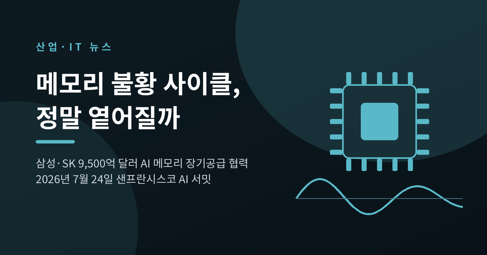
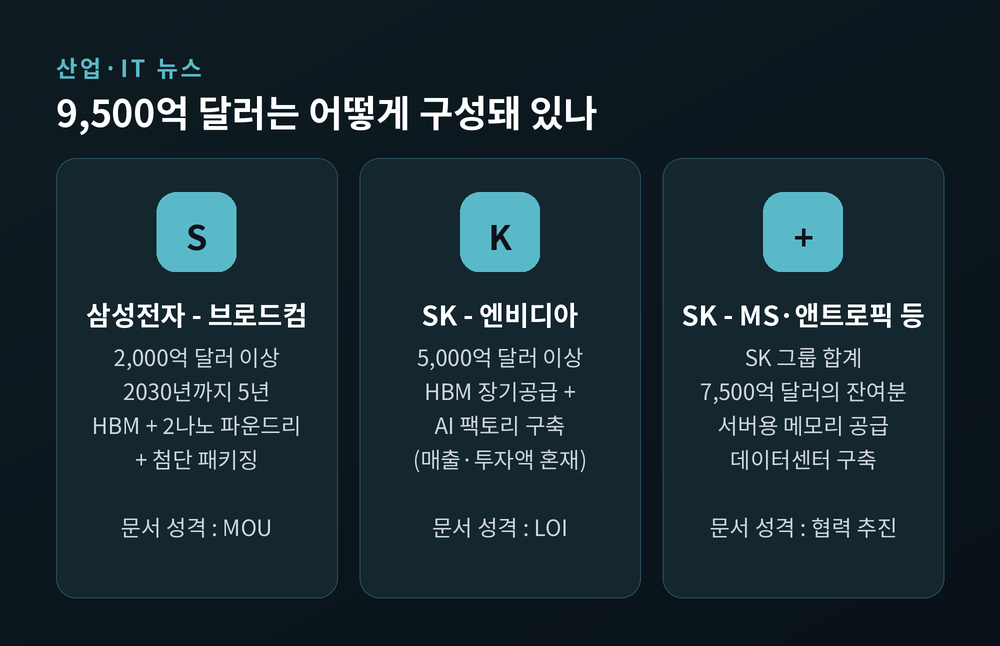
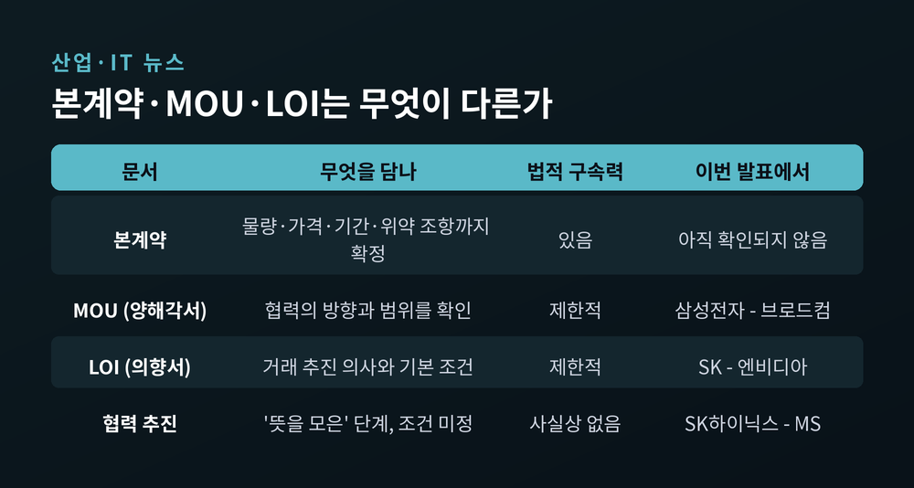
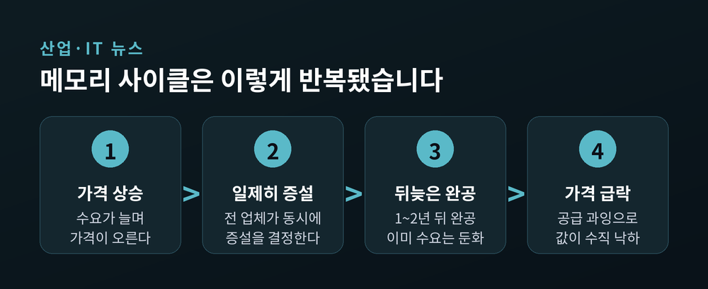
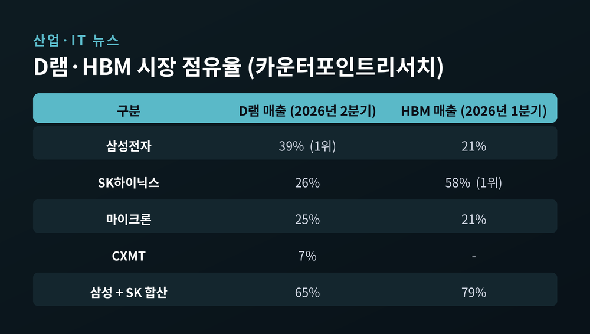
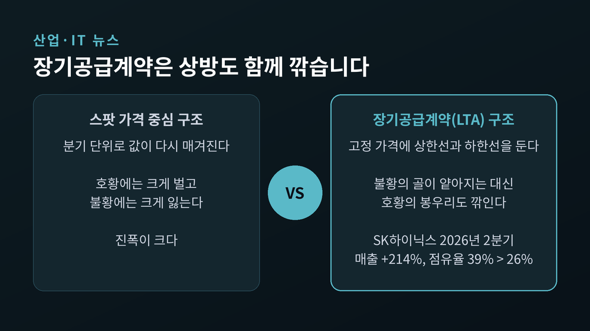
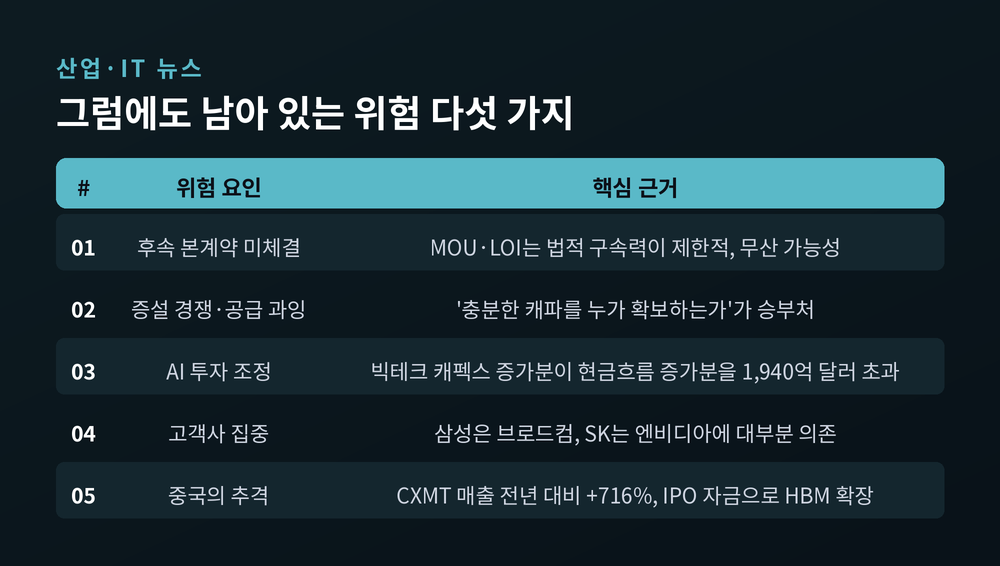

이번 글에서는 삼성전자와 SK가 미국 빅테크와 발표한 9,500억 달러 규모의 AI 메모리 협력을 정리해 보겠습니다. 발표된 지 한 달이 지난 지금, 이 숫자를 어떻게 읽어야 하는지에 초점을 맞췄습니다. 특히 "메모리의 불황 사이클이 옅어진다"는 해석이 얼마나 타당한지 따져보겠습니다.
세 줄 요약
현지시간 2026년 7월 24일, 미국 샌프란시스코의 '더 미드웨이'에서 AI 서밋이 열렸습니다. 이재명 대통령이 주재한 자리였습니다. 젠슨 황 엔비디아 최고경영자, 이재용 삼성전자 회장, 최태원 SK그룹 회장, 샘 올트먼 오픈AI 최고경영자가 함께 참석했습니다.
이 자리에서 나온 협력 규모가 합계 9,500억 달러입니다. 한화로 약 1,390조 원입니다. 기간은 5년입니다.
내역은 이렇습니다.
삼성전자는 브로드컴과 2,000억 달러 이상 규모의 전략적 업무협약을 맺었습니다. 2030년까지 메모리와 파운드리, 첨단 패키징을 아우르는 협력입니다. 브로드컴의 차세대 AI 가속기에 고대역폭메모리(HBM)를 공급하고, 무선광대역통신 반도체 등에 2나노 이하 공정을 적용하는 내용입니다.
SK그룹은 엔비디아를 포함한 미국 기업들과 7,500억 달러 규모의 협력을 발표했습니다. 이 가운데 엔비디아 한 곳과의 협력만 5,000억 달러 이상입니다. SK하이닉스는 마이크로소프트와도 AI 워크로드에 최적화한 서버용 메모리를 데이터센터에 중장기 공급하는 방안에 뜻을 모았습니다. SK텔레콤은 엔비디아의 차세대 '베라 루빈' 시스템과 SK하이닉스 HBM4를 활용해 최대 2기가와트 규모의 AI 팩토리를 짓고 2027년부터 단계적으로 가동할 예정입니다.
네이버도 엔비디아·브룩필드와 100억 달러 규모의 AI 팩토리 인프라 투자에 나섭니다.

여기서 한 번 멈춰야 합니다. 보도마다 표현이 갈렸기 때문입니다.
김용범 대통령실 정책실장은 브리핑에서 "단순히 숫자만 적어놓고 서명한 수준은 아니다"라고 말했습니다. 빅테크가 우리 기업에 주문을 넣어 장기 공급 수주를 한 것이라는 설명이었습니다. 일부 매체도 "신규 장기 공급 계약을 맺었다"고 전했습니다.
그러나 1차 자료는 다르게 말합니다.
삼성전자가 직접 낸 보도자료의 제목에는 'memorandum of understanding', 즉 양해각서라고 적혀 있습니다. 금액도 '추정(estimated)'이라는 단어로 수식했습니다. 공급에 대해서도 '추진할 계획(plan to pursue)'이라고 썼습니다.
SK와 엔비디아가 맺은 문서는 의향서(LOI)입니다.
양해각서는 협력의 방향과 범위를 확인하는 문서입니다. 의향서는 거래를 추진하겠다는 의사와 기본 조건을 담는 문서입니다. 둘 다 본계약 이전 단계이고, 법적 구속력은 제한적입니다. 후속 협상에서 물량과 가격이 달라질 수도, 계약이 무산될 수도 있습니다.
실제로 확정되지 않은 항목이 많습니다. 삼성전자와 브로드컴은 협력 범위만 제시했을 뿐 공급 물량과 가격, 적용 제품, 양산 일정을 정하지 않았습니다. SK와 엔비디아도 제품별 물량과 계약 기간, 투자 분담 방식을 후속 과제로 남겼습니다.
숫자의 구성도 눈여겨볼 만합니다. 삼성의 2,000억 달러는 브로드컴에 공급할 제품의 매출이 중심입니다. 반면 SK와 엔비디아의 5,000억 달러에는 SK텔레콤의 AI 팩토리 구축 비용, 즉 투자액이 함께 들어 있습니다. 두 숫자를 같은 잣대로 비교하기 어려운 이유입니다.
이데일리는 이 대목을 정직하게 적었습니다. "이번 계약의 구체적인 법적 성격은 아직 확인되지 않았다."

이 발표가 주목받은 진짜 이유는 금액이 아닙니다. "메모리의 불황 사이클이 옅어질 수 있다"는 해석이 따라붙었기 때문입니다.
메모리 반도체는 오랫동안 대표적인 사이클 산업이었습니다. 이유는 이 제품이 사실상 범용 상품이기 때문입니다. 원유나 구리처럼, 어느 회사가 만들었든 성능 차이가 크지 않아 서로 대체됩니다. 그래서 가격이 브랜드가 아니라 수급으로 결정됩니다.
되풀이되는 경로는 늘 비슷했습니다.
가격이 오릅니다. 업체들이 일제히 증설에 나섭니다. 공장이 완공될 무렵이면 이미 비싸진 값에 부담을 느낀 수요가 식어 있습니다. 공급은 폭증했는데 수요는 줄었으니 가격이 수직으로 떨어집니다.
이 주기가 3~4년마다 반복됐습니다. 업계에서는 이를 '월드컵 주기'라고 부르기도 했습니다. 2008년 치킨게임 국면에서는 D램 가격이 1년 전보다 85% 떨어졌습니다. 독일 키몬다는 그 파도를 넘지 못했습니다.

바뀐 것은 두 가지입니다.
첫째, 수요의 성격입니다. 예전에는 스마트폰과 PC가 메모리 수요를 좌우했습니다. 둘 다 경기에 민감한 소비재입니다. 지금은 AI 데이터센터가 중심입니다. 데이터센터 증설은 소비 심리보다 기업의 중장기 투자 계획을 따릅니다. 수요가 경기 사이클에서 한 걸음 떨어진 셈입니다.
둘째, 거래 방식입니다. 고객사들이 분기 단위 계약 대신 3~5년짜리 장기공급계약을 원하기 시작했습니다.
그리고 이 변화는 양해각서가 아니라 실적 발표에서 확인됩니다.
삼성전자는 2026년 2분기 실적 설명회에서 "전체 캐파의 60~70% 수준에서 장기 계약을 계획하고 있다"고 밝혔습니다. 주요 5대 글로벌 데이터센터 고객과는 이미 계약을 완료했고, 추가 5개 대형 고객과도 협상이 마무리 단계라고 했습니다. SK하이닉스는 하루 앞선 발표에서 "핵심 고객을 포함해 10여 개 고객과 장기공급계약 협상을 마무리했다"고 전했습니다. 양사 모두 기본 계약 기간은 5년입니다.
수치도 사이클 산업답지 않습니다. SK하이닉스의 영업이익률은 72%, 삼성전자 메모리 사업의 이익률은 60%를 웃도는 것으로 추정됩니다. 엔비디아(65%)나 TSMC(58%)와 견줘도 낮지 않습니다. 삼성전자의 2026년 2분기 영업이익은 89조 5,000억 원으로 3개 분기 연속 최대치를 새로 썼습니다.
시장 지위도 탄탄합니다. 2026년 2분기 글로벌 D램 매출 기준 점유율은 삼성전자 39%, SK하이닉스 26%로 합산 65%입니다. HBM은 2026년 1분기 매출 기준 SK하이닉스 58%, 삼성전자 21%로 합산 79%였습니다.

여기까지만 보면 낙관적입니다. 하지만 같은 분기의 다른 숫자가 반대편 이야기를 합니다.
SK하이닉스는 2026년 2분기에 매출을 전년 동기 대비 214% 늘렸습니다. 기록적인 실적입니다. 그런데 점유율은 1년 전 39%에서 26%로 떨어졌습니다.
카운터포인트리서치의 황민성 리서치 디렉터는 이유를 두 가지로 짚었습니다. 하나는 HBM 매출 비중이 가장 높아 HBM 평균 가격 하락의 타격을 크게 받았다는 것입니다. 다른 하나가 핵심입니다.
"경쟁사들보다 장기공급계약을 더 일찍 체결했다."
장기공급계약은 고정 계약 가격을 기준으로 상한선과 하한선을 설정합니다. 그래서 가격이 오르는 국면에서는, 일찍 협상해 둔 고정 가격이 지금 시세보다 낮을 수밖에 없습니다.
이것이 장기계약의 본질입니다. 불황의 골을 얕게 만드는 바로 그 구조가, 호황의 봉우리도 똑같이 깎아냅니다. 안정성을 사는 대가로 상승의 몫을 내주는 거래입니다.
한 가지 덧붙이면, HBM 가격은 이미 하락 중이었습니다. 2026년 2분기 범용 D램 가격은 1분기 대비 급등한 반면 HBM 가격은 전년보다 떨어졌습니다. 기존 HBM3E의 가격 하락과 HBM4 출시 지연이 겹친 결과입니다. 공급 부족이 곧 모든 제품의 가격 상승을 뜻하지는 않는다는 이야기입니다.

낙관 쪽 논거만큼이나 반대편 논거도 분명합니다. 다섯 가지를 정리합니다.
첫째, 후속 본계약입니다. 2026년 8월 말 현재, 삼성–브로드컴이나 SK–엔비디아의 본계약 체결 소식은 확인되지 않았습니다. 물량과 가격, 일정이 확정돼야 9,500억 달러 가운데 얼마가 실제 매출이 될지 판단할 수 있습니다.
둘째, 증설 경쟁입니다. 대규모 설비투자가 이어지면 결국 공급 과잉으로 돌아옵니다. 닐 샤 카운터포인트 부사장은 "남에게 기회를 내주지 않을 만큼의 충분한 생산 능력을 누가 확보하는가, 그리고 장기공급계약이 어떻게 형성되는가에 따라 승패가 갈릴 것"이라고 봤습니다. 증설은 이미 경쟁의 언어가 됐습니다.
셋째, AI 투자 자체의 조정 가능성입니다. 로이터가 런던증권거래소그룹 전망치를 분석한 결과, 마이크로소프트·알파벳·아마존·메타·오라클의 2025년 대비 2027년 설비투자 증가액은 약 5,340억 달러로 예상됐습니다. 같은 기간 영업현금흐름 증가액 전망치는 3,400억 달러입니다. 투자 증가분이 현금 창출 증가분을 1,940억 달러 웃도는 셈입니다. 벌어들이는 속도보다 쓰는 속도가 빠릅니다.
넷째, 고객사 집중입니다. 삼성의 2,000억 달러는 사실상 브로드컴 한 곳입니다. SK의 7,500억 달러 중 5,000억 달러 이상은 엔비디아 한 곳입니다. 캐파의 60~70%를 장기계약으로 묶는다는 것은, 생산의 대부분을 소수 고객의 발주 계획에 연동시킨다는 뜻이기도 합니다.
다섯째, 중국입니다. CXMT는 2026년 2분기 매출이 전년 대비 716% 늘며 세계에서 가장 빠르게 성장하는 D램 공급업체가 됐습니다. 최근 기업공개로 확보한 자금을 HBM과 LPDDR6 생산능력 확장에 쓸 것으로 보입니다.

전문가들의 답은 대체로 한 방향입니다.
'칩 워'의 저자 크리스 밀러는 이렇게 말했습니다. "현재는 분명 슈퍼사이클이지만, 데이터센터 산업 역시 자체적인 경기 사이클을 갖고 있다. 장기 계약이 변동성을 줄일 수는 있어도 사이클 자체가 사라지는 것은 아니다."
씨티의 피터 리 애널리스트도 "이번 사이클이 과거보다 길고 강할 수는 있지만, 반도체 산업의 순환 구조가 완전히 사라지지는 않을 것"이라고 봤습니다.
시장의 판단도 비슷합니다. 지난 1년간 SK하이닉스 주가는 600% 이상, 삼성전자는 약 300% 올랐습니다. 그런데도 두 회사의 주가수익비율은 6배 이하에 머물러 있습니다. TSMC가 약 19배, 엔비디아가 약 22배인 것과 비교하면 눈에 띄게 낮습니다. 사이클이 정말 끝났다고 시장이 믿는다면, 이 숫자는 진작 달라졌을 것입니다.
결국 한 문장으로 모입니다. 사이클의 진폭은 줄어들고 있지만, 주기가 사라진 것은 아닙니다.
세 가지를 권합니다.
첫째, 후속 본계약의 공시 여부입니다. 물량과 가격, 기간이 담긴 계약이 나오는지가 이번 발표의 진위를 가릅니다.
둘째, 빅테크의 분기 설비투자 계획입니다. 계획이 상향되는지 하향되는지가 메모리 수요의 선행 지표입니다.
셋째, HBM4의 실제 출하 속도입니다. 엔비디아 베라 루빈과 AMD 인스팅트 MI455X 기반 랙 출하가 시작되면서 3분기부터 HBM4 물량이 본격화될 전망입니다. 제품 믹스가 개선되면 HBM 가격 하락세도 둔화됩니다.
정리하면 이렇습니다.
9,500억 달러는 대단한 숫자입니다. 그러나 그 숫자가 지금 담고 있는 것은 계약서가 아니라 방향입니다. 방향이 계약이 되는 데는 시간이 걸리고, 그 사이에 조건은 얼마든지 바뀔 수 있습니다.
한 가지는 분명해 보입니다. 예전의 메모리는 스팟 가격표를 보며 오늘의 값을 확인하는 산업이었습니다. 지금의 메모리는 5년치 계약서를 놓고 상한선과 하한선을 협상하는 산업으로 옮겨가고 있습니다.
거래의 방식이 바뀌면 위험의 모양도 바뀝니다. 사라지지는 않습니다.
다시 사이클이 오겠냐고 물으신다면, 저는 형태를 달리해 오리라고 답하겠습니다.
투자 관련 유의사항
이 글은 공개된 보도자료와 언론 보도, 시장조사기관 자료를 바탕으로 산업 구조를 해설한 글입니다. 특정 종목의 매수·매도를 권유하거나 주가를 전망하려는 목적이 아닙니다. 본문에 인용된 점유율·이익률·주가 수치는 각 자료의 발표 시점 기준이며 이후 변동될 수 있습니다. 언급된 협력 규모는 확정된 계약 금액이 아니라 양해각서와 의향서에 담긴 추정치입니다. 투자 판단과 그 결과에 대한 책임은 투자자 본인에게 있습니다.